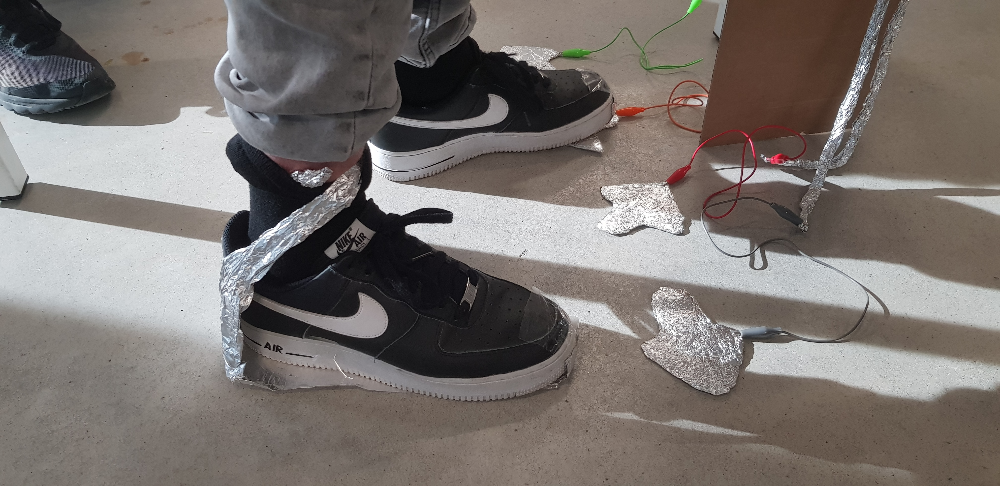
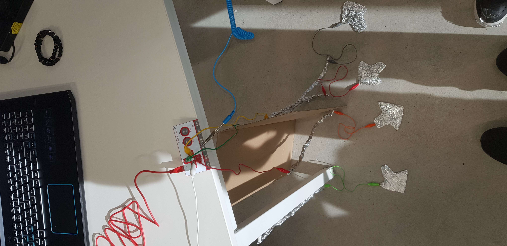

makey makey is een chip die je kan gebruiken voor het maken van een controller voor een game of andere dingen

als eerst hadden we een simpele prototype gemaakt die je kan gebruiken met je handen. Ik en een vriend hebben een controller gemaakt voor een muziek game die je kan besturen met je voeten. hier zijn een paar filmpjes en afbeeldingen van de controller.
dit is een groter project die ik heb gemaakt met een paar vrienden. In dit project hebben we een levens grote controller gemaakt met de makey makey en alluminium folie. de controller was gemaakt voor de game shell shock. je kon het met 2 mensen spelen ,want we hadden 2 controllers gemaakt aan elke kant kon 1 iemand spelen.